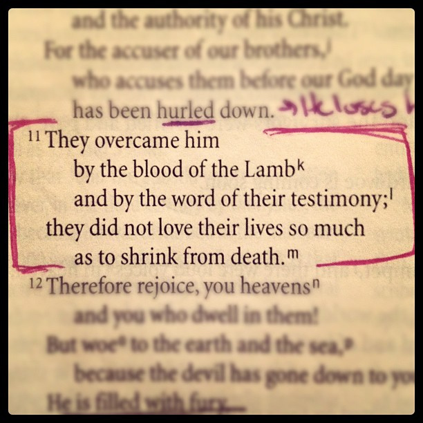
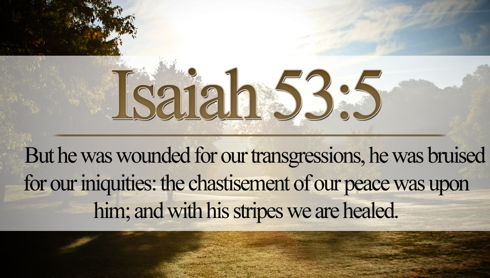
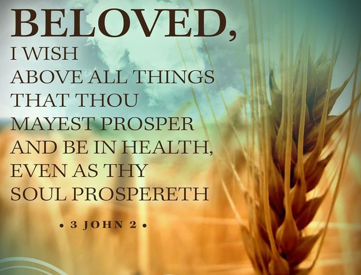
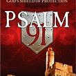

Christianity 101
Be Prepared | Prevent Crisis!
When you’re facing a crisis, remember what Jesus said to His disciples the night before His crucifixion: “Let not your heart be troubled” (John 14:1).
Fear Not! The Lord is With You.
“All who rage against you will surely be ashamed and disgraced; those who oppose you will be as nothing and perish" Isaiah 41:11
Prayer of Salvation
Please note: You can pray to God in your own words if you choose.
Daily Prayer Bullets
And they overcame him by the blood of the Lamb, and by the word of their testimony; and they loved not their lives unto the death. Rev. 12:11
Powerful Healing Prayer
"Beloved, I wish above all things that thou may prosper and be in health, even as your soul prospers.”
How To Keep Your Healing
Jeremiah 23:28-29 “Let the one who has my word speak it faithfully …”
God's Word is Medicinal
You must be diligent to take your healing prescription daily or more frequently till you receive your cure. The invisible Godhead becomes visible in Jesus Christ.

THE EXCHANGE MADE AT THE CROSS
Jesus was made sin with our sinfulness that we might be made righteous with His righteousness.
THE MIRACLES OF JESUS
How God anointed Jesus of Nazareth with the Holy Ghost and with power: who went about doing good, and healing all that were oppressed of the devil; for God was with him. Acts 10:38
Psalm 23
Yea, though I walk through the valley of the shadow of death, I will fear no evil; For You are with me; Your rod and Your staff, they comfort me
Prayer of Protection | Psalm 91
For the LORD has commanded His angels to protect me in all my ways. In their hands they shall lift me up, lest I dash my foot against a stone.
Give Thanks to God for He is Good!
Let us begin now with a new earnestness; diligence; love and commitment to firstly honour Abba Father with a heart of “praise and thanksgiving” for all that He has done for each one of us His children, throughout this past year.”
21 Powerful Confessions!
According to Jesus Christ Our Lord, if you have faith; you will do something. You will speak! You must open your mouth and speak in line with what God says.
Praying Psalm 51
Wash me throughly from mine iniquity. And cleanse me from my sin. For I acknowledge my transgressions

World Peace is Possible
Lord, make me an instrument of thy peace. Where there is hatred, let me sow love. By Francis of Assisi
Prayer for Wisdom from God
Through wisdom is an house builded; and by understanding it is established: Proverbs 24:3
The Power of the Tongue
Death and life are in the power of the tongue, and those who love it will eat its fruit. Proverbs 18:21
Christian Meditation
"Do not let this Book of the Law depart from your mouth; meditate on it day and night, so that you may be careful to do everything written in it". Ps 19:14
There is tangible power in the Blood of Jesus!
The blood covenant is God’s last card for man’s deliverance. The blood of Jesus is a singular devastating weapon against Satan.
Powerful Christian Confession
I want to tell you the only real secret to getting ahead in this world. It's simple. Put the Word of God first place in your daily life.
This is Revival
Revival is an “awareness of God’ that grips the whole community, and the roadside, the tavern, as well as the church, become the places where men find Christ.
The Lord's Prayer
My Father who is in Heaven; How wonderful is your name... Let your will be done in my life as You ordained it in heaven...